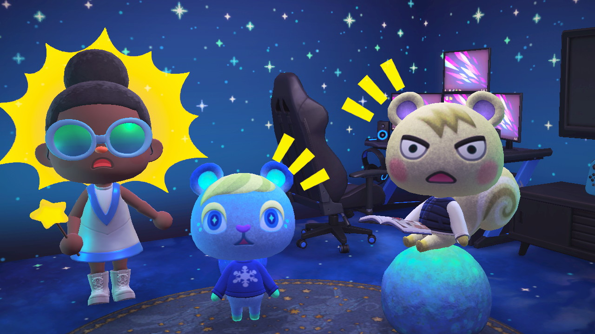
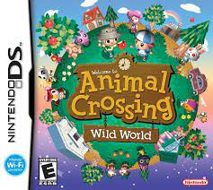

Animal Crossing is one of Nintendo's most popular titles, behind Mario and Pokémon. Nintendo has released an Animal Crossing title on every console since the Nintendo 64, demonstrating its continued popularity.
Animal Crossing: New Horizons is my favorite and most-played video game of all-time, so I've included screenshots of the my time with the game. I've also included images of the cover art for every Animal Crossing game.
 